H3-4D 训练报告
在 MiniMax-H3 视频生成模型上接 VGGT-Ω 的预训练深度头和相机头，让同一个模型同时输出 RGB、深度和相机位姿。本报告记录上线前的核对、阶段 A（过拟合验证）和阶段 B（TartanAir 全量训练）、户外片段深度异常的排查，之后的 G1（只给一张图就联合生成 RGB 视频 + 深度 + 相机）及其问题定位，以及之前的阶段 1（S1）：冻结 H3，只训练读 DiT 特征的几何解码器，先在 TartanAir 上过拟合到超过 VGGT-Ω；再之后一节记录冻结 DiT 之后，从 256 个窗口到全量 TartanAir 逐步确定解码器结构的实验。最新进展见紧接要点之后的“新版本：H3 编码器 + VGGT-Ω”一节：不再读 DiT 特征，H3 VAE 编码器的 latent 接入 VGGT-Ω，RGB 由 H3 自己的解码器重建。
要点
新版本：H3 编码器 + VGGT-Ω（保留 RGB 解码器）
- 目标
- 输入一段视频，同时输出 RGB、逐帧深度和相机位姿，几何精度至少达到 VGGT-Ω。和之前各节最大的不同：不再读 H3 DiT 的特征，只用 H3 VAE 编码器输出的 latent。深度和相机是预测任务；RGB 分支是重建，由 H3 自己的 VAE 解码器完成。
- 为什么这样做
- 读冻结 DiT 特征的路线卡在 DiT token 的粒度上（一个 token 覆盖 4 帧 × 32×32 像素），最好的结果是验证集深度 0.144–0.154、旋转约 2.1–2.5°，离 VGGT-Ω（0.028 / 0.18°）很远。文献里同类工作（Latent Bridge、AEON、SplatFlux）的共同做法，是把视频 VAE 的 latent 接到一个预训练三维重建模型的输入端或浅层，复用它的整个网络。H3 VAE 的 latent 每帧是 24×32 的网格，恰好等于 VGGT-Ω 在 384×512 输入下的 patch 网格，可以直接对齐。
- 路线
- 按三步走：① Latent Bridge 式诊断（阶段 1）：一切冻结，只训练一个 Adapter 去拟合 VGGT-Ω 编码器的最终输出；② AEON 式主方案（阶段 2）：Adapter 接到 VGGT-Ω 编码器的浅层，下游一起微调，只用教师蒸馏；③ 端到端微调（阶段 3，开发中）：在阶段 2 的基础上加入真值深度和相机损失，用真值监督整体微调重建网络，这一点借鉴 SplatFlux；另外解冻 H3 编码器，并加入经冻结解码器的 RGB 重建损失。后两项是我们新加的：SplatFlux、AEON 和 Latent Bridge 都冻结 VAE。
- 评估
- 四组窗口：训练窗口 64 个（在训练集里）、held-out 32 个（训练场景里没训练过的窗口）、验证 32 个和验证 128 个，都来自训练从未见过的两个场景 carwelding、endofworld。验证 32 沿用前面各节的同一组窗口；验证 128 是在这两个场景所有不重叠的窗口里均匀抽取的，样本更多、置信区间更窄。验证 128 不是由验证 32 扩充而来，两组只有 4 个窗口相同。指标和前面各节相同：逐帧中位数对齐的深度 AbsRel、token 级 AbsRel（与前面各节定义相同：逐帧中位数对齐后，把对数深度在一个 DiT token 覆盖的范围内取平均，即 32×32 像素、同一 latent 对应的 1 或 4 帧，再算 AbsRel；只反映粗粒度误差。新版本不经过 DiT，沿用这个粒度是为了和前面各节可比）、所有帧对的相对旋转误差和平移方向误差（中位数，度）、AUC@30。另外两项：“与教师的差”，即把 VGGT-Ω 在原始 RGB 上的预测当作答案时的同样误差；token R²，即 Adapter 输出与 VGGT-Ω 编码器同一层 token 的拟合优度：按通道标准化后，以该窗口全部 token 的总体均值为基线，逐窗口计算再取平均（与下文岭回归探针的 R² 算法不同，两处数值不能直接比较）。训练数据为 11 个训练场景中的 4096 个 22 帧窗口：包含之前 256 个窗口实验用的全部窗口，其余从全量 12,428 个窗口中均匀抽取，排除与 held-out 窗口有重叠帧的窗口。
模型结构
- 教师对齐
- 按对齐的位置分四种，阶段 1 只用 A，阶段 2 用 A + B + D，C 在阶段 3 加入；四种都会在 4096 个窗口上做消融。A 接入层 token：Adapter 的输出对齐 VGGT-Ω 编码器在同一层的 token（按教师的通道方差归一化的均方误差 + 余弦距离 + 0.5 倍的帧间差分误差 + 0.1 倍的帧间关系矩阵误差）。B 主干 token：VGGT-Ω 主干第 4、11、17、23 层的 token（DPT 头的 4 路输入），以及第 23 层的相机 token 和 16 个寄存器 token（相机头的输入）；每个 token 先做 LayerNorm，再按教师的逐通道统计量白化，计算均方误差（寄存器 token 权重 0.5）。C VAE latent：仿照 VA-VAE，latent 经一个小投影头对齐教师编码器的 token（阶段 3）。D 输出：深度取对数后减去每个窗口的中位数（不受整体尺度影响），比较数值和 x、y 方向的梯度；相机比较平移向量（各帧平移先除以该窗口所有帧平移长度的平均值，去掉整体尺度，方向和相对长度都计入）、四元数和视场角，三项之和乘以权重 5。注意：对齐位置“D 输出”和下文的参照“D（编码再解码）”是两回事。
阶段 0：两条参照线（T、D）与正确性检查
| 检查 | 做法 | 结果 |
|---|---|---|
| VGGT-Ω 从 token 进入 | 原版 VGGT-Ω 没有“直接输入 token”的接口，我们把它拆成编码器、主干、两个头，可以从编码器任意一层接入。把教师自己的 token 从拆开的入口送进去，与直接输入 RGB 的结果比较 | 逐位一致（差异为 0） |
| 带梯度的第 4 层入口 | 打开梯度、逐块梯度检查点、DPT 头按 4 帧分块检查点后，从第 4 层送入教师 token，与不带梯度的教师结果比较；并检查反传 | |
| Adapter 的线性初始化 | γ = 0 时 Adapter 应当恰好等于岭回归的预测 | |
| latent 缓存 | 从已缓存的训练窗口中取 4 个，用与写缓存时相同的读取、缩放和编码路径重新编码，与缓存的 latent 逐元素比较（预设容差：最大差异 < 1e-3）。验证窗口此前没有缓存，这一步是第一次编码，不涉及这项比较 | 最大差异 1.4e-3 – 8.9e-3（标准化 latent 单位），超过预设容差，检查记为未通过。这个差异比帧或窗口错位会造成的差异（数量级为 1）小两到三个数量级，我们判断是浮点数值误差（两次编码都开启 TF32，但批次组合和卷积算法选择不同；具体来源没有单独验证），因此继续使用缓存 |
选接入层：岭回归探针
新版阶段 1：Latent Bridge 式诊断（H1）
- 怎么做
新版阶段 2：AEON 式主方案（H2）
- 怎么做
- 目前
四种做法一览：T、D、H1、H2
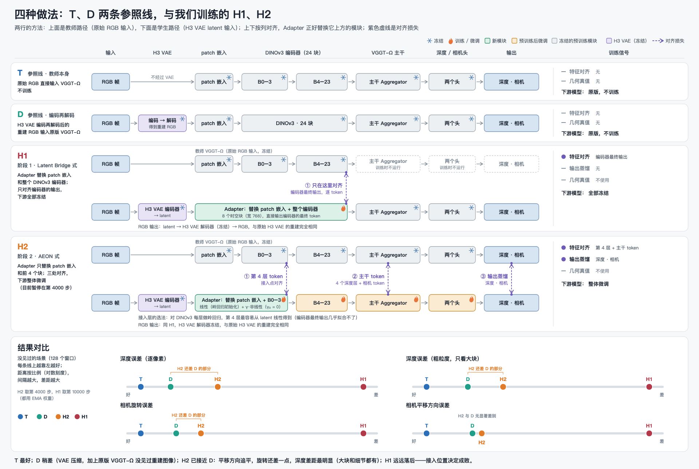
新版阶段 3：在 H2 的基础上加入深度和相机真值（H3）
- 怎么做
- 目前
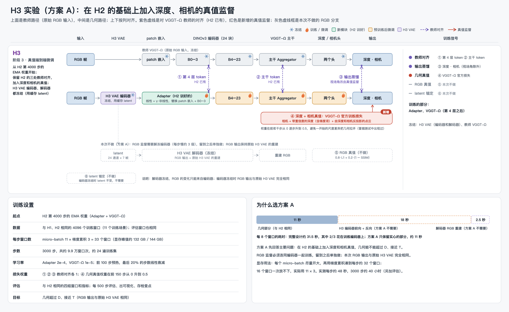
可视化：深度、RGB 重建与相机轨迹
每个窗口一张图，四行为第 0、7、14、21 帧。列从左到右：输入 RGB、H3 VAE 重建的 RGB（冻结编码器 + 冻结解码器，即阶段 1、2 中模型的 RGB 输出）、真值深度、阶段 1、阶段 2、D、T。深度按逆深度着色（暖色近），各列共用取自真值的色标，每个预测整段乘一个系数对齐到真值的中位数深度。图下方左侧是相机轨迹的俯视图（各方法的相机中心用相似变换对齐到真值后画出），右侧是这个窗口上各方法的指标。点击图片可以打开原尺寸。
训练过程中的可视化
训练时每次评估都会保存 4 个验证窗口（carwelding 场景）的对比图，用的是当时未经 EMA 的原始权重（本节其余图表都用 EMA 权重，所以同一步的深度图会和上面略有差异）。“阶段 1 · 8 窗口过拟合检查”一项显示的也是这 4 个验证窗口，它们不在那次实验训练的 8 个窗口里，误差大是预期的。列从左到右：输入 RGB、真值深度、当时的模型、VGGT-Ω（读原始 RGB）、模型的相对误差（|预测 − 真值| / 真值，0 到 0.3 着色，越亮误差越大）；四行为第 0、7、14、21 帧。
模型方案
目标：一个模型同时生成 RGB 视频、逐帧深度和逐帧相机位姿（4D）。H3 原有的 RGB 通路（VAE 编码器 → DiT → RGB 解码器）保持不变，旁边接一条几何分支。几何分支从 H3 的 DiT 中间层读特征，经过适配器换成 VGGT-Ω 头部要求的 token 格式，再交给 VGGT-Ω 预训练好的 DPT 深度头和相机头。
各组件
| 组件 | 输入 → 输出 | 参数量 | 状态 | 说明 |
|---|---|---|---|---|
| H3 VAE 编码器 | 22×3×384×512 → 24×7×24×32 | — | 冻结（fp32） | 空间压缩 16 倍；时间上第 0 帧单独一个潜帧，之后每 4 帧一个（17 帧一块：1+4+4+4+4） |
| H3 DiT（Omni） | 7×12×16 = 1344 个视频 token + 1 个空文本 token | 33B | 冻结（bf16）+ LoRA | 50 层，隐藏维 5376。“干净读出”：输入未加噪的潜变量，时间步标签 t = 1（H3 中 1 表示干净）。读第 12、24、36、49 层的视频 token |
| LoRA | DiT 每层注意力的 q / k / v / o | 161M | 训练 | 秩 64。目前只运行几何读出；若用同一个 DiT 做 RGB 生成，需要关闭这组 LoRA，否则会改变 RGB 输出（尚未实现和验证） |
| 适配器 ×4 | 1344×5376 → 每帧 24×32×2048 | 111M | 训练 | LayerNorm + 线性层 5376→2048；每个 DiT token 覆盖 4 帧 × 32×32 像素，展开成 4（时间）× 2×2（空间）个子 token，加可学习的子位置嵌入；再过残差 MLP（2048→4096→2048）。正好对上 VGGT-Ω 的 1/16 网格 |
| 相机 query | 最后一层适配特征 → 每帧 17 个 token | 101M | 训练 | 17 个可学习 query（1 个相机 + 16 个寄存器，对应 VGGT-Ω 的格式），2 层交叉注意力；第 0 帧加“参考帧”嵌入 |
| DPT 深度头 | 4 层 token → 深度 + 置信度（384×512） | 32M | 预训练 · 微调 | VGGT-Ω DenseHead 原样加载；深度 = exp(·)，置信度 = 1 + exp(·) |
| 相机头 | 各帧 17 个 token → 9 维位姿 | 204M | 预训练 · 微调 | VGGT-Ω CameraHead 原样加载；4 层跨帧自注意力；输出平移 3 + 四元数 4 + 视场角 2 |
| 教师 VGGT-Ω 1B-512 | 同一组 RGB 帧 | 1.1B | 冻结 | 只用于蒸馏和评估参照；官方权重（sha256 已校验），FAIR 非商业研究许可 |
损失函数
| 项 | 权重 | 内容 |
|---|---|---|
| 相机 | 5 | VGGT-Ω 官方相机损失：平移（×2）、旋转（×1）、焦距（×1），外加两两相对位姿项 |
| 深度 | 5 | 带置信度的 L1（绝对误差 + 0.2 × 相对误差），外加梯度项（4 个尺度）和法线项（权重 0.1，只对合成数据） |
| 点云 | 5 | 用预测深度和预测相机反投影出点云，与真值点云比较；把深度和相机绑在一起 |
| 蒸馏 · 特征 | 1 | 适配器输出与教师第 4/11/17/23 层 token 的 MSE（先各自做 LayerNorm） |
| 蒸馏 · 相机 token | 1 | 17 个相机 token 与教师的 MSE |
| 蒸馏 · 伪标签 | 0.5 | 只约束与尺度无关的量：对数深度（去掉每段的整体偏移）、旋转（对齐 ±q 符号）+ 视场角、按每段平均长度归一化的平移 |
- 真值尺度
- 与 VGGT-Ω 一致：以第 0 帧相机为原点，所有有效点到原点的平均距离缩放为 1。模型输出不做归一化，必须直接输出这个尺度。
- 蒸馏日程
- 三项蒸馏的权重在训练前一半线性降到 0，之后不再运行教师（后半程每步更快）。
训练超参数
| 项目 | 阶段 A（过拟合验证） | 阶段 B（B1，全量） |
|---|---|---|
| 可训练部分 | A1 / A2：适配器 + 相机 query + 两个头；A3：再加 LoRA | 适配器 + 相机 query + 两个头 + LoRA |
| batch | 1 | 7（显存探测得出，占满显存） |
| 训练长度 | A1 500 步；A2 / A3 1500 步 | 9,143 步 = 64,000 段（约 1 天） |
| 学习率 | 适配器 / 相机 query / LoRA 1e-4，预训练头 1e-5；AdamW（β 0.9 / 0.95，权重衰减 0.05） | |
| 学习率日程 | 预热 50 步，余弦退火到 10% | 预热 457 步（5%），余弦退火到 10% |
| 梯度裁剪 | 每个参数组单独裁剪到 1.0 | |
| 速度 | batch 1 | 适配器和 DPT 头开梯度检查点；每段 1.38 s（前半程有教师） |
| 评估 / 存盘 | 每 100 或 250 步评估；结束时存权重 | 每 457 步评估并保存可续训检查点；崩溃自动续训 |
训练数据
全部使用 TartanAir V1（合成数据，深度和相机位姿是精确真值），沿用 h3_depth 的场景划分，训练场景和验证场景完全不重叠，测试场景从未使用。
- 样本
- 每个样本是一段 22 帧（H3 的 VAE 要求 17n + 5 帧）。阶段 B 每次随机抽一条轨迹上的一个起点（按窗口数均匀），帧间隔随机取 1 或 2；间隔 2 时 22 帧跨 43 帧，相机运动更大。
- 分辨率
- 原始 640×480 等比缩小到 512×384（0.8 倍）；RGB 用面积插值，深度用最近邻插值（与 VGGT-Ω 相同）；内参按像素中心约定同步缩放。
- 深度
- TartanAir 的 z 深度（米）。有效范围 0.05–200 m：天空在 TartanAir 中记为几千到 6.5 万米的占位值，用 200 m 上限去掉。
- 位姿
- TartanAir 位姿是 NED 坐标系下的机体位姿（x 前、y 右、z 下），转换为 OpenCV 约定的相机外参（x 右、y 下、z 前，camera-from-world）。CPU 重投影检查的中位相对误差 0.1–0.5%。
- 评估集
- 阶段 A：of1（1 段）、of8（8 个训练场景各 1 段）、val2（2 个验证场景各 1 段）。阶段 B：固定的 16 个训练窗口 + 32 个验证窗口，在所有不重叠窗口中均匀抽取，覆盖两个验证场景的 Easy 和 Hard。
上线前核对
长时间训练之前，先确认数据约定、教师权重、代码改动都是对的。
| 项目 | 做法 | 结果 |
|---|---|---|
| 多智能体代码审查 | 5 个维度（数据、H3 主干、几何分支、损失与指标、训练循环），每条中高危问题再由独立审查者尝试反驳 | 无高危问题；修复了教师评估只覆盖第一批、蒸馏权重为 0 后仍运行教师、四元数正负号、多余显存拷贝等 |
| 预计算 AdaLN 调制 | 时间步固定为 1，每层的调制参数是常数，提前算好并释放 13B 参数的投影层 | |
| VAE 跳过补帧 | 官方编码会把 22 帧补到 34 帧再丢掉补出来的 3 个潜帧；直接编码最后 5 帧得到同样结果 | |
| 断点续训 | 第 30 步存盘后重新启动 | 从第 30 步继续到第 34 步，batch 和优化器状态正确恢复 |
阶段 A：过拟合验证
- 为什么做
- 先确认这套结构能把少量片段“背下来”。如果连几段都学不会，上全量数据只会浪费一天的 GPU。
- 怎么做的
- 三个运行，batch 1，同一套损失和教师蒸馏。A1：1 段、DiT 冻结、500 步。A2：8 个场景各 1 段、DiT 冻结、1500 步。A3：同 A2，再给 DiT 加 LoRA（低秩微调）。另用 2 段没见过的验证片段看泛化。通过标准：训练段深度 AbsRel < 0.03 且相机旋转误差 < 1°。
- 结论
阶段 B：TartanAir 全量训练（B1）
- 为什么做
- 阶段 A 证明结构能学；阶段 B 看在全部训练数据上能否泛化到没见过的场景。
- 怎么做的
- 目前
可视化结果
下面是各模型在具体片段上的实际输出：深度图、相机轨迹、以及由模型预测的深度 + 预测的相机融合出来的点云。选择模型和片段即可切换；同一个验证片段可以在不同模型之间对比。
户外片段排查
- 为什么做
- seasonsforest、neighborhood 两段在 A2 / A3 中误差最高，教师在 seasonsforest 上也只有 0.80。怀疑是深度数据处理（例如远处 / 天空深度的截断）与 VGGT-Ω 的做法不一致。
- 怎么做的
- ① 统计每段原始深度的分布；② 把教师的误差按深度区间、是否在深度边缘拆开；③ 查 VGGT-Ω 论文和代码里的深度处理（是否设了最大深度、天空掩码、归一化细节）。
- 结论
-
seasonsforest 的高误差主要来自近处的细碎枝叶：真值把每片叶子、每根枝条都记成近处，叶缝里是几十米外的背景；模型和教师都只能预测平滑的树冠，在“预测远、真值近”的像素上相对误差可达数倍。11% 的像素贡献了 69% 的误差，50–200 m 的远处像素只贡献 1.3%。所以截断远处深度对这一段的 AbsRel 帮助很小。
VGGT-Ω 论文没有设全局 max depth；代码支持按数据集设上限，但默认关闭，公开配置里只有 uCo3D 设了 256。他们训练用的是 TartanAir V2 和 TartanGround（不是我们用的 V1），这两个数据集的配置没有公开。真值归一化和我们完全相同（所有有效点到第一帧相机的平均距离）。在这几段上，把上限从 200 m 降到 80 m 只会让 seasonsforest、neighborhood 的平均深度变化 5–9%；只有 westerndesert 这种空旷场景变化明显（45%）。教师的原始尺度偏差在室内段同样存在，所以不是远处深度造成的。
决定：B1 不动，继续训练；深度上限作为消融 X3（见“消融实验计划”）。另外补一套与 VGGT-Ω 一致的评估指标（0.1–100 m，逐帧中位数尺度 + 平移对齐），并同时报告中位数相对误差，避免少数像素主导平均值。
| 片段 | AbsRel（逐帧对齐） | 中位数相对误差 | 相对误差 > 100% 的像素 | 这些像素贡献的误差 | 深度边缘像素 | 边缘贡献的误差 | 0–2 m 像素贡献的误差 | 50–200 m 像素贡献的误差 |
|---|---|---|---|---|---|---|---|---|
| seasonsforest / P002 | 0.798 | 0.225 | 11.2% | 68.7% | 56.2% | 77.4% | 53.0% | 1.3% |
| neighborhood / P001 | 0.166 | 0.100 | 1.4% | 24.9% | 9.8% | 29.5% | 39.1% | 2.4% |
| office / P000（室内对照） | 0.012 | 0.009 | 0.0% | 0.8% | 0.1% | 2.3% | 51.9% | 0% |
| 环节 | VGGT-Ω | 我们（B1） | 影响 |
|---|---|---|---|
| 最大深度 | 论文未设全局上限；代码可按数据集设 max_depth（超过置为无效），默认关闭，公开配置仅 uCo3D = 256 | 200 m（主要用来去掉天空占位值） | TartanAir V2 的设置未公开，无法确认他们用了多少 |
| 天空 | 论文说天空深度“没有良好定义”，试过预测无效区域的分支后去掉；按数据转换规范（占位值存为 0）推断天空为无效 | > 200 m 即无效，等价于去掉天空 | 一致（若保留天空占位值，归一化尺度会被放大几十到几百倍） |
| 有效像素 | 深度 > 0.001 | 0.05–200 m | 最小值无实际差别 |
| 深度缩放 | 最近邻插值 | 最近邻插值 | 一致 |
| 真值尺度归一化 | 所有有效点到第一帧相机距离的平均值，无截断 | 同一份代码 | 一致。上限 200 m → 80 m 时，seasonsforest / neighborhood 的平均深度只变 5–9%，westerndesert 变 45% |
| 边缘过滤 / 分位数截断 | 代码支持，默认关闭 | 无 | 一致 |
| 训练数据中的 TartanAir | TartanAir V2 + TartanGround | TartanAir V1 | 教师没见过 V1 的这些深度文件 |
| 评估协议 | 0.1–100 m，预测和真值都截断到该范围，逐帧中位数尺度 + 平移对齐 | 0.05–200 m，不截断，逐帧中位数尺度对齐 | 户外数字不能和论文直接比；需要补一套他们的协议 |
G1：联合生成 RGB + 深度 + 相机（X2 第一版）
- 为什么做
- B1 证明了 H3 的中间特征带有 3D 先验，但 B1 是“看着完整视频估计深度和相机”的感知任务，不是生成。G1 把几何放进 H3 的生成过程：推理时只给一张图，模型同时生成 RGB 视频、每帧深度和每帧相机，三者可以直接反投影成 4D（动态）点云。
- 和 B1 的区别
- 不用 VGGT-Ω 教师，也不用 B1 的权重，从 H3 原始权重开始；按生成模型训练（flow matching，从噪声生成）；第一版只用 latent 空间的 flow matching 损失，深度复用 RGB 的 VAE 编码和解码。第二版计划加回归损失，并把深度解码换成 B1 里的 VGGT-Ω DPT 头。
- 状态
- 准备中。
表示方法：三路数据都放在 H3 的 latent 网格上
| 数据 | 编码 | 解码 | 说明 |
|---|---|---|---|
| RGB | H3 VAE（24 通道） | H3 VAE 解码器 | 与 H3 原生完全一致 |
| 深度 | 场景归一化（与 B1 相同：第 0 帧为原点、有效点平均距离为 1）后取对数，映射到 [0, 1]（范围 0.05–20，天空记为最远），复制成 3 通道，用 同一个 RGB VAE 编码，再按深度自己的训练统计量逐通道标准化 | RGB VAE 解码 → 取 3 通道平均 → 反映射回深度 | VAE 往返本身的误差 AbsRel 0.030（第一版深度精度的上限） |
| 相机 | raymap：每帧每 16×16 像素一条光线，6 维（方向 + Plücker 矩，第 0 帧相机坐标系），同一潜帧的 4 帧按通道叠放，按训练统计量逐通道标准化（零均值、单位方差） | 每帧 768 条光线：最小二乘求相机中心，DLT + RQ 分解求旋转和内参 | 由真值光线恢复相机的误差约 1e-6（精确） |
- 三路排布
- RGB、深度、raymap 各自是一组 token，按 [文本 | 首帧关键帧 | RGB | 深度 | raymap] 排成一个序列（序列长度约为 H3 的 3 倍），共享同一个 DiT。深度 / raymap token 与对应的 RGB token 使用相同的位置编码，各自再加一个可学习的模态向量（初始为 0）用于区分。
- 复制 RGB 分支
- 深度和 raymap 的输入投影、输出投影都直接复制 H3 的 RGB 投影，而不是零初始化：两个新分支从第 0 步起就用 RGB 的先验处理自己的输入，再在训练中被微调到深度 / 相机模态。测试显示初始化时它们对自己带噪输入的敏感度 κ 已接近 1（第一次尝试接近 0）。
- 保留 RGB 分支
- 两处保证。① 注意力是单向的：RGB 部分（文本、关键帧、RGB）只在自己内部做注意力；深度 / raymap token 可以看到所有 token。② LoRA 只作用于深度 / raymap token，RGB 部分始终走 H3 的原权重（第一次过拟合时 LoRA 也作用于 RGB token，结果几何损失把首帧条件改坏了，见下方“过拟合验证”）。测试显示加入深度 / raymap token、并给 LoRA 随机权重后，RGB 的输出与 H3 官方前向逐位一致。双向注意力记为消融 X8。
- 单图条件
- 沿用 H3 原生的首帧关键帧机制：首帧单独编码、加噪到 t = 0.999，放在生成序列前面。推理时只需要一张图。
- 重建模式
- 训练时 20% 的样本给出全部 RGB 帧，这些 RGB token 使用关键帧的时间步 0.999（与 H3 处理干净条件的方式一致），只生成深度和相机。用途是在验证集上直接对真值评估、并与 B1 对比。
- 损失
- 三路的 flow matching 速度均方误差：目标 v = x0 − 噪声（与 H3 的约定一致，t = 1 为干净）。重建模式下不计 RGB 项。三路权重均为 1。
- 可训练
- DiT 上的 LoRA（秩 64，注意力 q/k/v/o + FFN，3.3 亿参数，只作用于深度 / raymap token）、深度 / raymap 的输入输出投影（复制得到）和两个模态向量；H3 主干和 VAE 冻结。
训练流程
① 数据：每个训练片段的三路数据各自变成 H3 latent 网格，标准化后各自成为一组 token，加噪。
相机 → raymap 打包
② 前向与损失：首帧关键帧、RGB、深度、raymap 四组 token 一起进入 H3 DiT（RGB 部分单向注意力），各自用自己的输出投影得到速度，与 x0 − ε 做均方误差。
③ 推理：只给第 0 帧；三路从纯噪声开始，按 H3 的 Euler 规则走 30 步；VAE 解码出 RGB 和深度，从 raymap 拟合每帧相机，再反投影成 4D 点云。
上线前检查
过拟合验证（8 个训练片段，batch 8，每 100 步评估）
全量训练之前，先在固定的 8 个训练片段上训练，确认三件事：① RGB 分支保持 H3 的能力（单图生成第 0 帧 PSNR 不下降）；② 深度 / raymap 分支读得到自己的带噪输入（κ ≈ 1），损失持续下降；③ 采样出来的深度和相机往真值方向走。评估用的就是这 8 个训练片段。预设的通过门槛是：重建模式深度 AbsRel < 0.5、旋转误差 < 20°、PSNR 不低于第 0 步。
| 步 | 单图生成 | 重建模式（对真值） | ||||
|---|---|---|---|---|---|---|
| 第 0 帧 PSNR | 第 0 帧深度 AbsRel | 深度 AbsRel | 旋转误差 | 平移方向误差 | κ 深度 / 相机 | |
| 第一次：LoRA 作用于全部 token | ||||||
| 0 | 30.00 | 0.919 | 1.686 | 127.3° | 90.4° | 0.90 / 0.93 |
| 100 | 15.61 | 0.764 | 0.952 | 132.5° | 98.0° | 0.94 / 0.99 |
| 200 | 19.81 | 0.689 | 0.887 | 59.2° | 83.1° | 0.95 / 0.98 |
| 第二次：LoRA 只作用于深度 / raymap token | ||||||
| 0 | 30.01 | 0.919 | 1.782 | 127.0° | 87.0° | 0.90 / 0.93 |
| 100 | 30.01 | 0.760 | 0.963 | 130.4° | 86.4° | 0.92 / 0.98 |
| 200 | 30.01 | 0.729 | 0.940 | 73.6° | 85.7° | 0.96 / 0.99 |
| 300 | 30.01 | 0.542 | 0.610 | 53.2° | 81.1° | 0.96 / 0.97 |
| 单步预测：真值加噪到 t，模型一步预测干净 raymap | 实际采样：从纯噪声走 30 步，沿途的 x0 预测 | |||||||
|---|---|---|---|---|---|---|---|---|
| t | raymap x0 误差 | 旋转误差 | 平移方向误差 | t | raymap x0 误差 | 旋转误差 | 平移方向误差 | |
| 0.0（纯噪声） | 0.753 | 22.4° | 80.9° | 0.00 | 0.805 | 19.6° | 89.5° | |
| 0.1 | 0.166 | 14.0° | 33.3° | 0.09 | 0.714 | 18.6° | 75.9° | |
| 0.3 | 0.022 | 5.5° | 7.3° | 0.21 | 0.700 | 24.7° | 70.7° | |
| 0.5 | 0.008 | 3.3° | 4.3° | 0.35 | 0.738 | 28.8° | 70.7° | |
| 0.8 | 0.002 | 1.3° | 1.9° | 0.53 → 0.93 | 0.759 → 0.768 | 32.2° → 35.6° | 69.9° → 70.3° | |
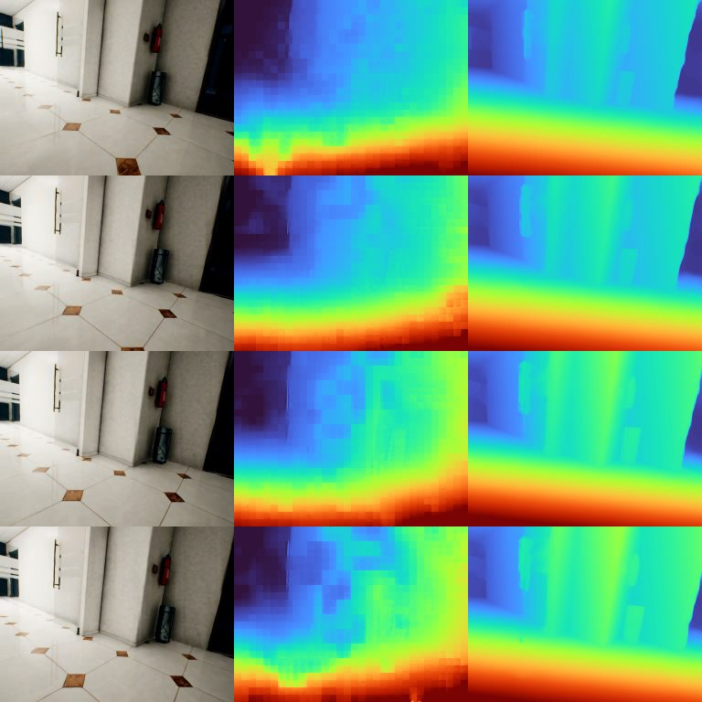
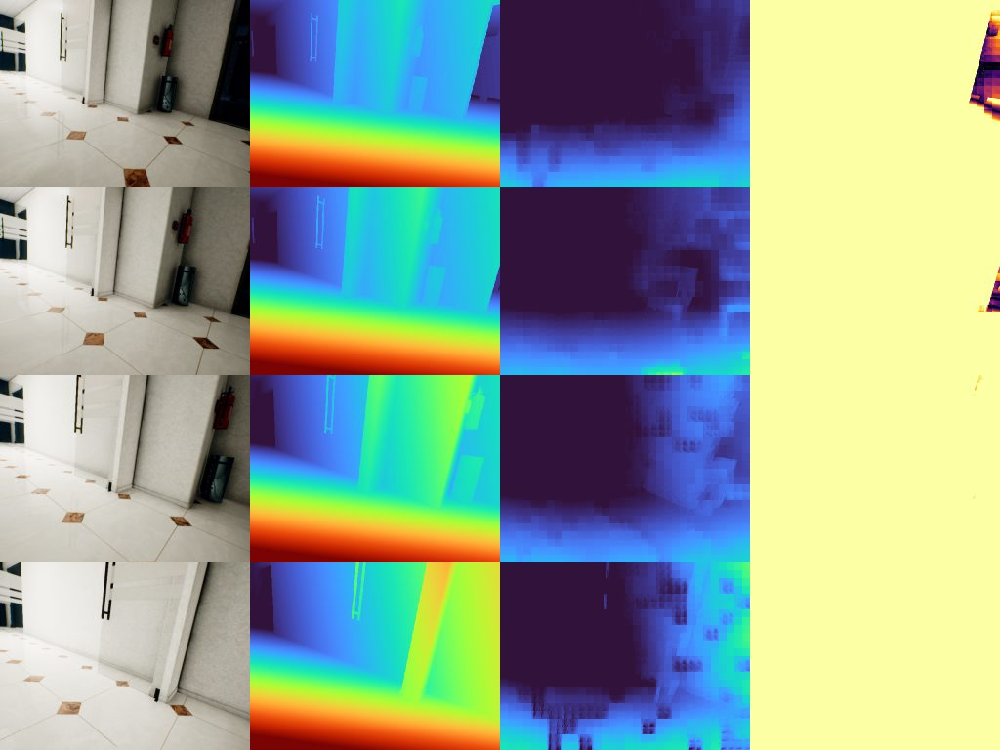
训练配置
评估方法（每 1000 步）
- 单图生成
- 验证集 8 个固定窗口，只给第 0 帧，用 H3 的 Euler 采样 30 步生成 22 帧。指标：① 第 0 帧深度对真值（逐帧对齐 AbsRel）；② 第 0 帧 RGB 的 PSNR；③ 几何一致性：把 VGGT-Ω 当作评估工具，在生成的 RGB 上估计深度和相机，再和我们同时生成的深度、相机比较（深度 AbsRel，相机旋转误差、平移方向误差、AUC@30）。一致性越高，说明生成的 RGB、深度、相机越像同一个 3D 场景。VGGT-Ω 不参与训练。
- 重建模式
- 验证集 16 个固定窗口，给出全部 RGB，只生成深度和相机（采样 shift 2），与真值比较（与 B1 相同的指标）。
- 输入敏感度 κ
- 同一片段、同一时间步、换一份噪声，看深度 / raymap 的输出变化多少：κ ≈ 1 表示模型确实在读带噪的输入，≈ 0 表示看不到输入（第一次尝试失败的原因）。在 t = 0.2 / 0.5 / 0.85 各测一次。
- 可视化
- 每次评估保存前 4 个片段的生成结果和点云，见下方查看器。
训练进展
第 1000 步评估与分析
第 1000 步（约 1.2 万个训练片段，9 小时）的结论是：深度在正常学习，相机还没学会从 RGB 里读出来。下面的数字都经过独立复算；“中位数”指 8 / 16 个评估片段的中位数。
| 分支 | 指标 | 第 0 步 | 第 1000 步 | 说明 |
|---|---|---|---|---|
| RGB | 单图生成第 0 帧 PSNR | 28.74 | 28.74 | RGB 部分不经过 LoRA、也看不到深度 / 相机 token，生成的视频与 H3 完全相同（同一随机种子下逐位一致） |
| 深度 | 重建模式 AbsRel（逐帧对齐） | 0.721 | 0.284 | δ1 0.27 → 0.62；原始尺度 AbsRel 1.25 → 0.59（尺度还偏） |
| 单图生成第 0 帧 AbsRel | 0.617 | 0.418 | 中位数 0.46 → 0.26；δ1 0.32 → 0.61 | |
| 单图生成：深度 vs VGGT-Ω（在生成 RGB 上） | 0.726 | 1.129 | 平均值变差是 3 个 endofworld 片段拉高的（5.25 / 1.43 / 1.41）；中位数 0.77 → 0.29，其余 5 段平均 0.66 → 0.19，δ1 0.27 → 0.56 | |
| 相机 | 重建模式旋转误差 | 127.6° | 21.1° | 第 0 步等于随机（随机旋转的平均误差约 127°） |
| 重建模式平移方向误差 | 93.1° | 80.3° | 随机方向为 90°，基本没学到 | |
| 重建模式 AUC@30 | 0.001 | 0.023 | 参考：B1 第 914 步在其验证集上为旋转 3.5°、平移方向 12.8°、AUC@30 0.58、深度 0.167（B1 从 VGGT-Ω 预训练的深度 / 相机头开始，并有教师蒸馏；两者验证片段只重合 2 段，在这 2 段上 B1 的相机同样明显更好） |
- 现象
- 生成的相机中心在帧与帧之间来回跳，而不是沿轨迹移动：8 个可视化片段的轨迹总长是最大位移的 6.7–19 倍（真值约 1 倍）。跳动有 4 帧的周期：一个潜帧里叠放的 4 帧各带一个固定偏移，这个偏移占了跳动的 92%，去掉后轨迹总长缩短 49–81%。剩下的缓慢漂移在重建模式下大致朝真值方向（夹角 12–47°），但幅度只有真值的 1/2–1/13。平移方向误差按全部 231 对帧计算，相邻帧的真实位移（中位数约 0.016）远小于这种跳动（0.05–0.16），所以这项指标会一直停在 90° 附近，直到跳动被压下去。
- 证据
- 把训练损失按时间步分组（上方“噪声最大一段”的图），在 t < 0.05、第 600–1109 步：深度损失在重建样本上比单图样本低 22%（0.41 vs 0.52，p ≈ 0.001），说明模型会用干净的 RGB 推深度；相机损失在重建样本上并不更低（0.58 vs 0.45，置信区间排除了“重建样本好 6% 以上”），说明相机分支还没有在读 RGB。
- 原因
-
raymap 这种表示冗余度很高：每帧 768 条光线 × 6 通道，描述的只是约 11 个自由度的相机，而且 TartanAir 的内参固定不变（方向通道 85–91% 的方差就是固定的像素网格）。所以只要带噪的 raymap 里还剩一点信号（t ≥ 0.1），模型靠“把自己的带噪输入投影回相机流形”就能把损失降得很低（t = 0.3–0.7 时只有 0.02–0.03），根本不需要看 RGB。只有噪声最大的约 10% 样本会因为“读 RGB”而得到奖励。
采样时恰好相反：相机的整体结构是在最初几步（噪声最大）定下来的，后面的步骤只在这个结构上细化（过拟合阶段的诊断已经看到这一点）。于是生成的相机基本是由初始噪声决定的一个“先验样本”，与画面无关。
4 帧周期的来源：raymap 的输入 / 输出投影复制自 RGB，叠放的第 s 帧继承了 RGB latent 第 s 组通道的权重，所以一开始每个槽位就带着不同的偏移；训练到第 1000 步，这个偏移已经变成各片段不同，但还没消失。
- 排除程序错误
- 逐行核对了 raymap 管线：按 H3 VAE 源码，22 帧编码为 17 + 5 两段，潜帧 0–6 分别对应第 {0}、{1–4}、{5–8}、{9–12}、{13–16}、{17}、{18–21} 帧，深度和 raymap 的打包方式与此完全一致，并且与同位置的 RGB token 共享位置编码；训练目标的构造和评估时的解码互为精确逆运算；标准化与槽位无关；采样器与训练使用同一套时间步约定。没有发现错误。
- 下一步
-
当前训练继续（深度还在明显变好）。原计划“第 2000 步若平移方向仍约 90° 就把重建样本比例提到 50%”单独做可能不够：重建样本在 t ≥ 0.1 时同样不需要看 RGB。更直接的修正是让相机流多在高噪声下训练：重建样本中，深度 / raymap 的时间步单独采样，并大幅偏向 t ≈ 0（RGB 保持干净），这样“从干净 RGB 推相机”才成为主要的训练信号；同时可以去掉 raymap 槽位间的 RGB 投影继承（例如对 4 个槽位用同一组投影权重）。这两项改动不改变“只用 flow matching 损失”的设定，可以从第 1000 / 2000 步的检查点继续训练。
更彻底的方向是换成低维的相机表示（每帧一个相机 token，记为消融 X9）。
第 2000 步评估与分析（训练在此停止）
按计划在第 2000 步（约 2.4 万个训练片段，约 18 小时）评估后停止训练，检查点已保存。下表是 16 个重建片段 / 8 个单图生成片段上的结果；“改善片段数”是逐片段配对比较第 1000 步与第 2000 步，p 值来自符号置换检验。每个片段只采样一次，所以单个片段的变化有较大随机性，结论以配对统计为准。
| 分支 | 指标 | 第 1000 步 | 第 2000 步 | 改善片段数 | 判断 |
|---|---|---|---|---|---|
| 相机 | 重建模式旋转误差 | 21.1° | 9.2° | 16 / 16 | 确定改善；旋转误差 < 5° 的帧对从 2% 升到 23% |
| 重建模式平移方向误差 | 80.3° | 63.6° | 11 / 16 | 有改善（p ≈ 0.02），中位数 82° → 55°；但两极分化：9 段低于 60°，另有 3 段 endofworld/Easy 在 110° 以上（方向基本反了） | |
| 重建模式 AUC@30 | 0.023 | 0.069 | 11 / 16 | 仍远低于 B1 第 914 步的 0.58 | |
| 单图生成：旋转 / 平移方向 vs VGGT-Ω | 18.3° / 90.1° | 6.0° / 89.1° | 8 / 8；3 / 8 | 旋转改善；平移方向仍在随机水平，但生成的视频几乎不动（净位移只有真实片段的 1/3–1/10），这项指标在这里参考价值有限 | |
| 深度 | 重建模式 AbsRel（逐帧对齐） | 0.284 | 0.333 | 9 / 16 | 形状没有变差：中位数 0.238 → 0.235，平均值上升全部来自 1 个片段（仰拍厂房屋顶，屋顶被生成成“最远 / 天空”，0.36 → 1.15）；去掉它变化为 0 |
| 重建模式 AbsRel（原始尺度） | 0.590 | 1.044 | 5 / 16 | 绝对尺度变得不稳定：尺度整体偏差超过 1.25 倍的片段从 3 段增加到 7 段，偏大偏小都有 | |
| 单图生成第 0 帧 AbsRel | 0.418 | 0.684 | 4 / 8 | 中位数 0.257 → 0.297，属于噪声范围；平均值主要被 1 个片段拉高（画面上部的墙面 / 水面被生成成“最远”） |
- 相机：变好了，但机制没变
-
评估上相机确实在进步（上表）。但把训练损失按时间步分组、控制住 t 之后，噪声最大一段（t < 0.1）重建样本与单图样本的相机损失之比是 1.02（95% 置信区间 0.94–1.11），第 1500–2000 步单独看也是 0.98：相机分支仍然没有利用干净的 RGB。同样的检验在深度上给出 0.73（p < 10⁻²⁰），说明检验本身灵敏度足够。噪声最大一段的相机损失从第 1200 步左右起基本不再下降；中等噪声（t = 0.3–0.7）的相机损失仍以每 1000 步约 22–25% 的速度下降，且两种样本完全同步，这对应的是“raymap 自身去噪变得更好”。
两者并不矛盾：损失是对全部 raymap 通道平均的，平移只占其中一小部分方差，如果相机分支只用 RGB 推出了很粗的平移，可能低于损失检验约 6% 的分辨率。但可以确定的是，“从 RGB 推相机”还远没有成为相机分支的主要信息来源。
- 相机轨迹
- 4 帧周期的跳动仍然是生成轨迹里最主要的高频成分（每个片段都显著），幅度比第 1000 步缩小约 23%（重建）/ 52%（单图）。重建模式的整体漂移幅度明显变大：与真值的比值中位数从 0.35 升到 0.62，carwelding/Easy/P001 的方向和幅度已基本正确（0.82 倍、偏 19°）。按相机中心估算，即使把 4 帧周期的偏移完全去掉，重建模式平移方向误差也只会从约 57° 降到约 51°，剩下的主要是整体运动方向和幅度不对。所以只修 raymap 的打包方式不够，关键仍是让相机分支学会从 RGB 推运动。
- 深度：形状稳定，尺度不稳
- 逐帧对齐后的深度形状与第 1000 步持平，训练损失仍在下降（0.261 → 0.226）。新出现的问题有两个：① 个别片段把大面积的真实表面（屋顶、墙面）生成成“最远 / 天空”，这正是深度编码里无效像素和天空共用的那个值；单图生成的“深度 vs VGGT-Ω”指标会排除被生成为天空的像素，所以看不到这种错误。② 绝对尺度变得不稳定：深度用对数编码到 [0, 1]（0.05–20），解码图整体只要偏 3.7% 的亮度，尺度就差 1.25 倍。
- 对后续计划的含义
-
① 相机：问题仍是高噪声段不读 RGB，第 1000 步提出的修正（重建样本中几何流的时间步偏向纯噪声、RGB 保持干净）依然最直接；低维相机 token（X9）是更彻底的方案。② 深度：天空 / 无效值与“很远”不应共用同一个编码值（例如单独给一个有效性通道，或把天空排除在深度流之外），尺度可以考虑由相机分支或单独的尺度 token 给出；第二版计划中的回归损失 + VGGT-Ω DPT 解码器也直接针对解码精度。③ 评估：目前每个片段只采样一次、片段数少（16 / 8），单片段波动很大；做决策前建议扩大评估集或每段多次采样。
第一次尝试：通道拼接 + 零初始化（已停止，对应消融 X7）
- 做了什么
- 三路在通道维拼接（每个 token 同时带 RGB、深度、raymap），深度 / raymap 通过两个零初始化的投影加到 RGB 的 embedding 上；时间步取 logit-normal 加 shift 5。batch 30 训练到第 1194 步（约 3.6 万段、14 小时）后停止。
- 结果
- 第 1000 步时 RGB 视频连贯，VGGT-Ω 在生成画面上估计出的深度也很干净；但生成的深度和相机解码出来都是 16×16 的块状噪声（重建模式深度 AbsRel 1.16、旋转误差 23°）。
- 原因
-
输入、输出投影同时为零是一个“双零鞍点”：深度损失传到输入投影的梯度与输出投影成正比，起步时为 0，只剩 RGB 损失带来的无关梯度。1000 步后深度输入投影只有 RGB 输入投影的 1.6%（与 Adam 随机游走的大小一致），模型基本看不到带噪的深度输入，只能预测“由 RGB 推出的平均深度”，无法预测噪声。损失因此卡在“看不到输入”的下限（≈ 1 + 条件方差 ≈ 1.16），采样时噪声原样保留。
次要原因：训练时间步只有 0.14% 落在 t > 0.8；深度和 raymap 没有按各自统计量标准化（二阶矩约 1.15 和 2）；重建模式下干净的 RGB 被打上了带噪的时间步。
- 修正
- 改为上面的独立 token + 复制 RGB 分支 + 单向注意力；按各自统计量标准化；时间步 50% 沿用 H3 原分布 + 50% 均匀；各参数组独立学习率和梯度裁剪；评估加入 κ。上线前先用 8 段数据做过拟合验证。
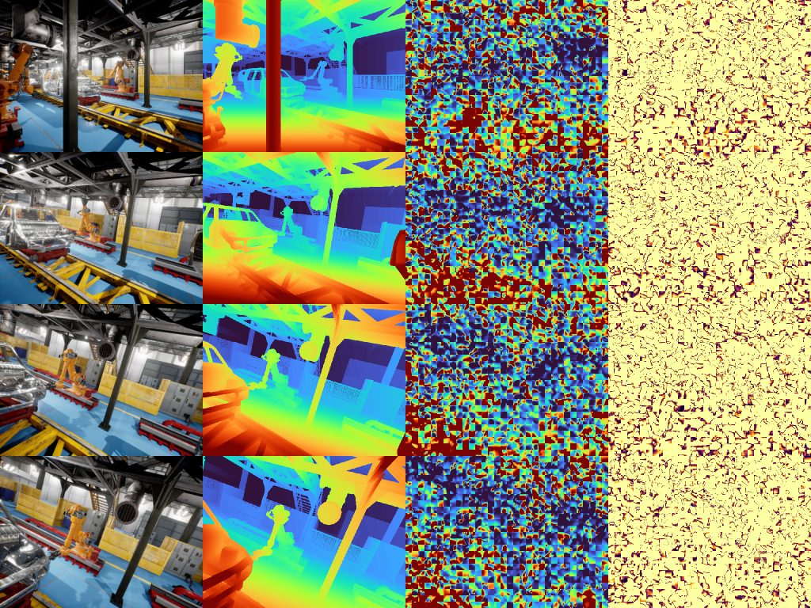
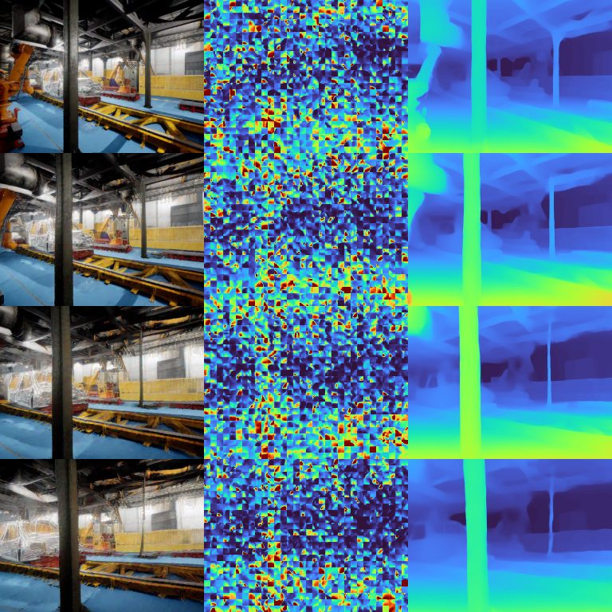
生成结果可视化
G1 问题定位（第 2000 步之后）
G1 停在第 2000 步时，三个分支都不满足要求：生成的 RGB 几乎不动；深度有全图块状纹理和错位块；相机生成和重建都不准。下面的排查全部只做评估、不训练，用 G1 第 2000 步的检查点（脚本 scripts/diag_g1.py、scripts/encode_prompts.py）。
RGB：画面几乎不动 —— 原因是没有文本条件
- 做了什么
- H3 官方的首帧生成视频，会把“
<Picture 1>:+ 首帧图像经 Qwen3-VL 编码的视觉 token + 提示词”整体送进 Qwen3-VL，取第 50 层输出作为条件；画面怎么动完全由文本控制。G1 一直用的是一个全零向量。我们在同样 8 个首帧上换不同的文本条件生成，再用 VGGT-Ω 估计生成视频的相机运动，并算逐帧光流。
| 文本条件 | 每帧光流 | 相机路径长度 | 相机净位移 | 首尾旋转 |
|---|---|---|---|---|
| 真实片段（参照） | 9.7 px | 0.92 | 0.62 | 27° |
| 全零文本，shift 5，30 步（G1 的做法） | 1.2 px | 0.064 | 0.058 | 5° |
| 全零文本，shift 12，50 步（官方采样设置） | 1.3 px | 0.065 | 0.059 | 5° |
| 首帧 + 空提示词 | 0.3 px | 0.032 | 0.028 | 2° |
| 首帧 + “镜头向前快速推进” | 3.0 px | 0.57 | 0.57 | 8° |
| 首帧 + “镜头静止” | 0.03 px | 0.005 | 0.001 | 0° |
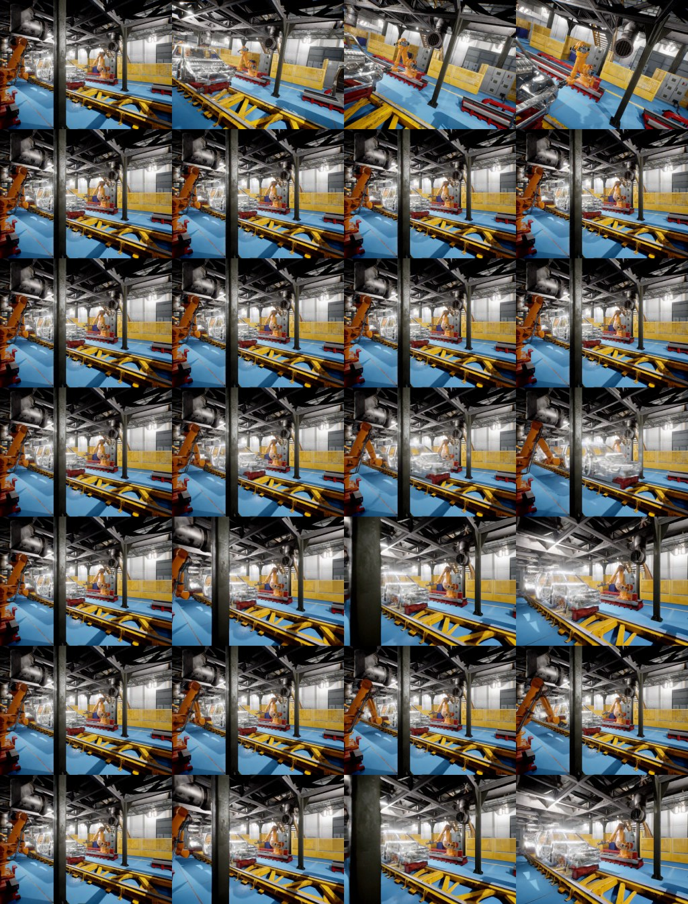
深度：两个尺度、两个原因
- 16 px 全图纹理
- 来自 RGB VAE 解码器。H3 的 VAE 解码器是 ViT，每个 latent 像素经一个线性层直接展开成 16×16 的像素块。只改动深度 latent 中的一个像素，解码结果就是一个边界锐利的 16×16 方块（覆盖同一潜帧的 4 帧；对数深度最多差 2.6，即深度差约 13 倍）；latent 噪声越大，块状越严重。真值深度只做一次编码—解码，AbsRel 就有 0.035（分块解码；不分块解码为 0.108 且纹理明显，必须用分块解码），已经高于 VGGT-Ω 的约 0.027，所以用这个解码器不可能超过 VGGT-Ω。
- 32 px 错位块
- 来自 DiT 生成时单个 token 出错：这些块的位置恰好对齐 DiT 的 token 网格（每个 token 是 2×2 个 latent 像素，即 32×32 像素）。从纯噪声生成的深度明显差于从加噪真值一步预测（latent 误差 0.76 vs 0.22，AbsRel 0.54 vs 0.14，t = 0.3），生成 latent 跨 token 边界的跳变比 token 内部大 18%（真值没有这个差别）；远处区域常被生成为“天空”编码值（天空、无效像素与“很远”共用同一个值）。采样从 30 步增加到 100 步没有改善。
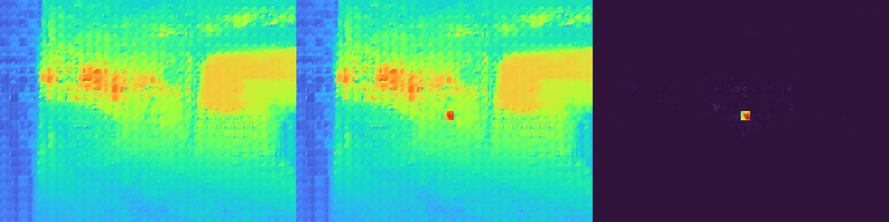
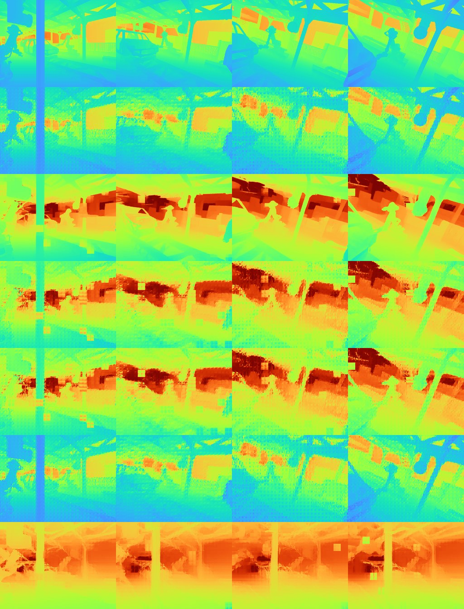
相机：与静止相机相当，解码方式本身也有损失
| 项目（重建模式，16 个验证窗口） | 旋转误差 | 平移方向误差 | 旋转 < 5° 比例 | AUC@30 |
|---|---|---|---|---|
| “相机完全不动”基线 | 8.75° | 90° | 40% | 0.00 |
| G1 第 2000 步，自由内参 DLT 拟合（评估默认） | 8.6° | 60° | 22% | 0.05 |
| 同一批生成光线，已知内参拟合 | 6.6° | 60° | 37% | 0.06 |
| 从加噪到 t = 0.4 的真值光线出发采样（上限参照） | 1.8° | 16° | 99% | 0.58 |
| VGGT-Ω（参照） | 0.2° | — | — | — |
- 因果测试
- 在噪声最大处（t = 0.02）让模型一步预测相机，分别给它真实画面、同一片段倒放的画面（外观相同、只有运动方向相反）、另一片段的画面：平移方向误差分别是 57°、89°、76°。倒放后平移方向变成随机，说明相机分支确实在利用画面里的运动（第 2000 步分析中“相机分支没有用 RGB”的推断不成立，以此测试为准），只是读得很弱。
- 结论
- G1 生成的相机和“静止相机”基线相当；用自由内参从光线场拟合相机（DLT）对噪声很敏感，真值光线加一点噪声，旋转误差就会爆到 100° 以上；即使从加噪真值出发，“raymap latent → 光线场 → 拟合相机”这条路的精度上限也只有 AUC@30 0.58。
阶段 1：冻结 H3 + 几何解码器（S1）
- 项目目标
- 训练一个基于 MiniMax-H3、生成和重建统一的 RGB—深度—相机模型，几何精度至少与 VGGT-Ω 打平。这首先是一个工程问题：要把训练基础设施搭好、验证扎实。
- 分阶段
- 第一阶段：冻结 H3 的 VAE 编码器和 DiT（不加 LoRA），只训练几何解码器，先在 TartanAir 上过拟合；过拟合结果应能追平甚至超过 VGGT-Ω，以此验证训练基础设施。第二阶段：加入更多数据，并放开 DiT 训练。
- 结构
- 真实或生成的视频 → H3 VAE 编码（冻结）→ H3 DiT 干净前向（冻结，t = 1）→ 取第 12、24、36、49 层视频 token → 4 个适配器（每个 DiT token 展开为 4 帧 × 2×2 个 2048 维子 token，正好是 VGGT-Ω 头部要求的每帧 24×32 网格）→ VGGT-Ω 的 DPT 深度头（输出 384×512 深度 + 置信度）和相机头（17 个可学习相机 query 读最后一层，输出平移、四元数、视场角）。两个头用 VGGT-Ω 1B-512 的预训练权重初始化。深度不再经过 RGB VAE 解码，相机不再从 raymap 拟合。
- 可训练
- 适配器（1.11 亿参数）、相机 query（1.01 亿）、DPT 深度头（0.32 亿）、相机头（2.04 亿）。H3 全部冻结。
- 损失
- 只用真值：VGGT-Ω 官方相机损失、带置信度的深度 L1（含梯度项和法线项）、由预测深度和相机反投影的点云损失。不用教师蒸馏；VGGT-Ω 只作为评估参照，在完全相同的片段上计算同样的指标。
- 两种模式
- 重建：真实视频直接进入上述流程。生成：H3 用官方文本条件从首帧生成视频，再对生成视频做同样的特征提取和解码。两种模式下解码器看到的都是“干净视频 latent + 零文本”的 DiT 特征，输入分布一致。
- 与 B1 的区别
- 结构相同，但 DiT 上没有 LoRA、没有教师蒸馏，也不再把 B1 当作单独的感知任务，而是作为统一模型的解码器部分。
S1a：8 个训练片段的快速过拟合验证
- 为什么做
- 全量训练要十几个小时。先用 8 个固定片段、每一步训练全部 8 段，约 1 小时就能看出整套流程能否把训练数据拟合到 VGGT-Ω 的水平；如果不能，在小数据上排查成本最低。
- 设置
- 阶段 A 用过的 8 个训练片段（8 个场景各 1 段，其中 seasonsforest 是户外细枝叶）+ 2 个验证片段；batch 8，1500 步，适配器和相机 query 学习率 2e-4，两个预训练头 5e-5，预热 50 步后余弦退火；每 100 步评估。latent 预先缓存，每步约 2.1 秒。
- 结论
- 加载中。
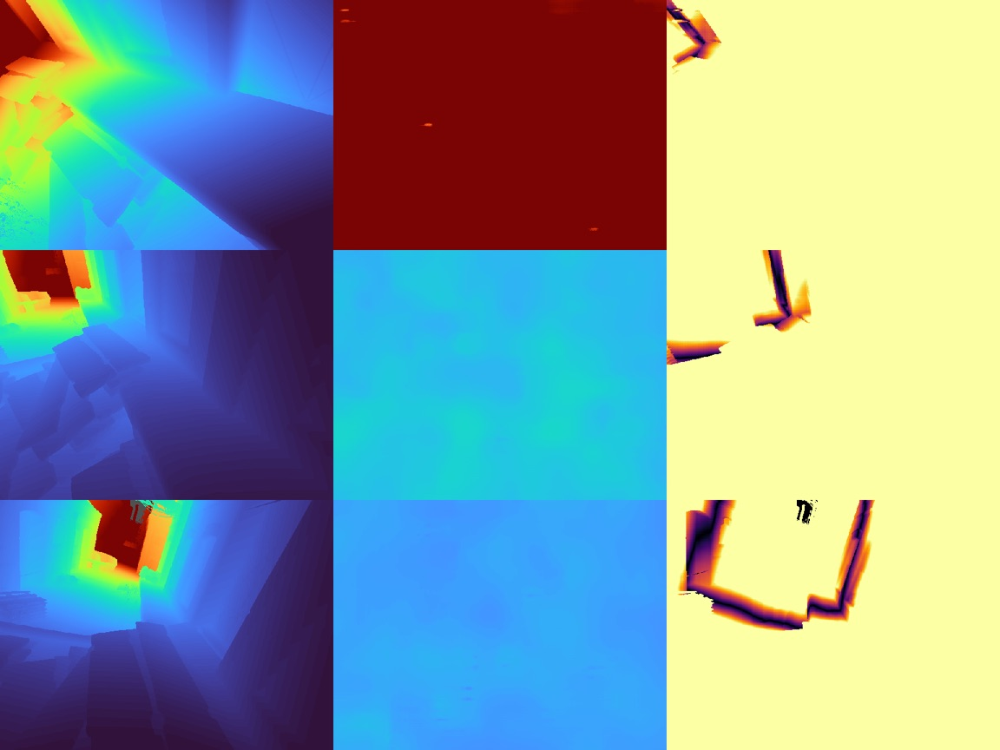
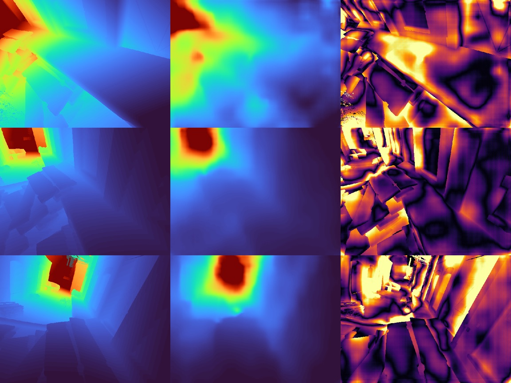
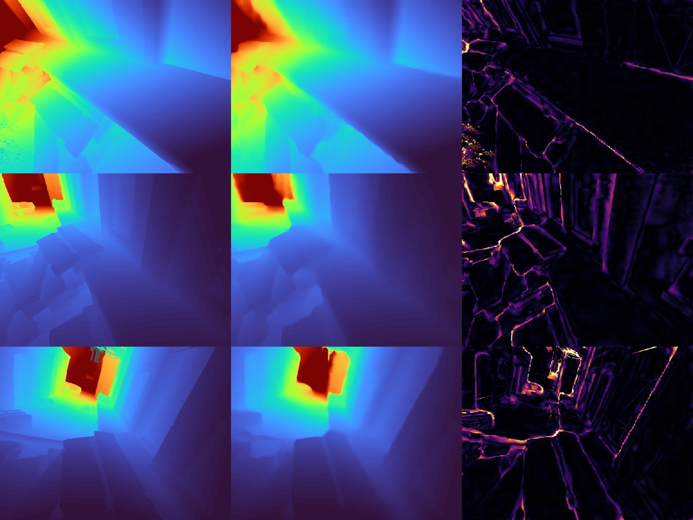
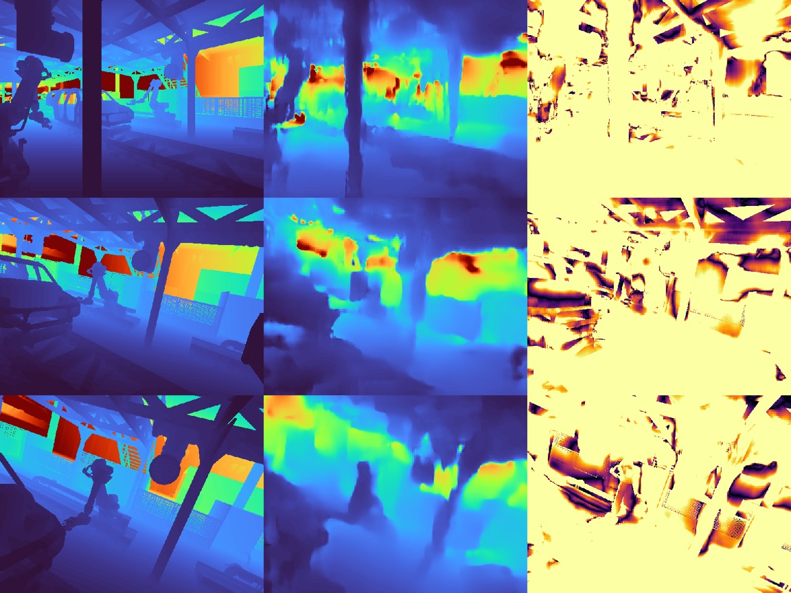
深度着色：按逆深度（暖色近），色标取自真值；误差列满刻度 30%。
S1b：全量 TartanAir
- 设置
- 训练集 11 个场景（238 条轨迹、18.4 万帧）中所有不重叠的 22 帧窗口，帧间隔 1 和 2，共 12,428 个窗口，每轮打乱后全部训练一遍；batch 8，1.5 万步（约 10 轮）；其余与 S1a 相同。每个窗口的 VAE latent 第一次编码后存盘，第一轮约 6 秒一步，之后约 2.2 秒一步。每 1000 步在 16 个固定训练窗口和 32 个验证窗口上与 VGGT-Ω 对比。
- 状态
- 训练中。
S1c：256 个窗口的记忆测试
- 为什么做
- S1b 跑完 10 轮，训练窗口和验证窗口的指标几乎一样，没有进入“背下来”的状态。要区分两种可能：主要是训练量不够，还是冻结的 DiT 特征 / 解码器容量不够。
- 做了什么
- 从 S1b 的 12,428 个窗口中均匀抽取 256 个作为全部训练数据，训练窗口的评估改为其中 16 个（保证评的是背过的窗口）；其余设置与 S1b 完全相同（冻结 H3、只用真值、无教师，batch 8，学习率 2e-4 / 5e-5，余弦退火）。2000 步，每个窗口约被训练 62 次。
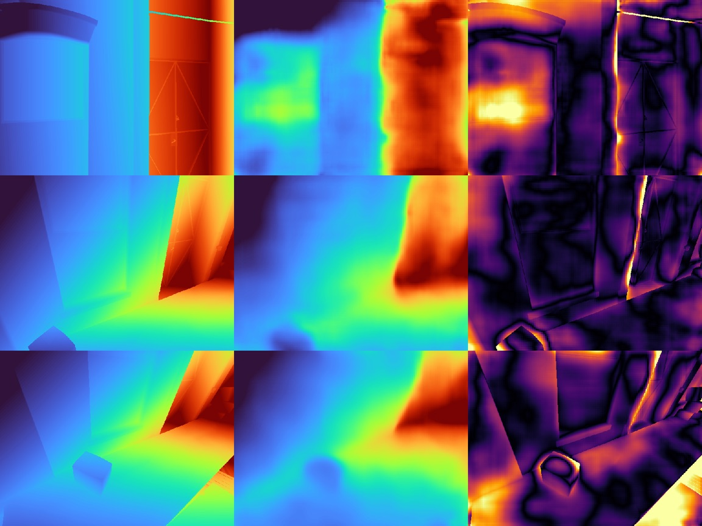
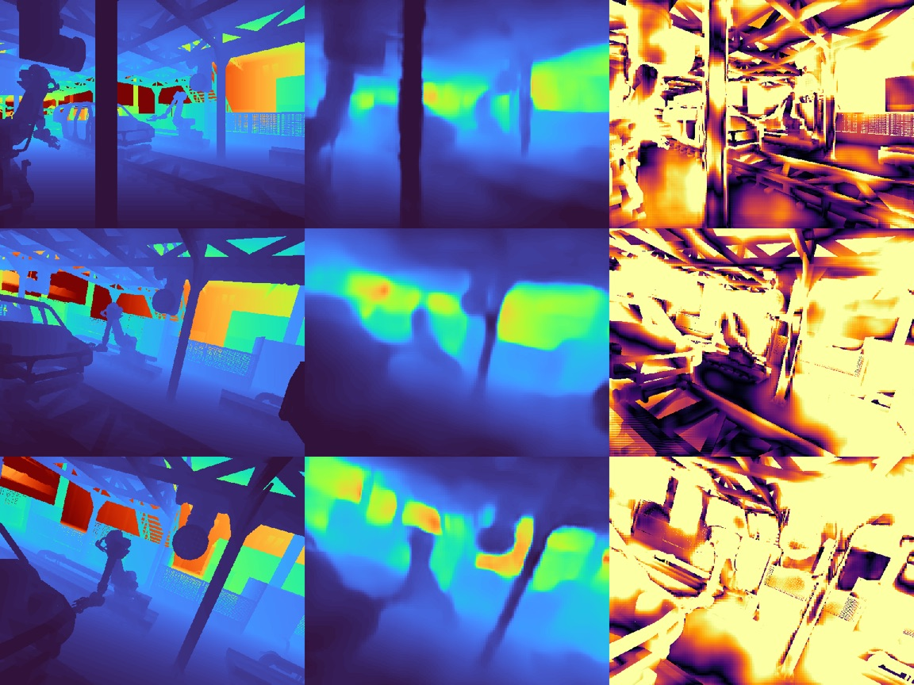
生成模式评估：同一个解码器用于 H3 生成的视频
- 做了什么
- 用 S1b 的最终权重，在 8 个验证窗口上分别跑两条路。重建：真实视频 → 解码器，和真值比较。生成：只给第 0 帧，H3 按官方文本条件（首帧视觉 token + “镜头向前快速推进”提示词，shift 12，50 步）生成 22 帧视频 → 对生成视频提取同样的 DiT 特征 → 同一个解码器输出深度和相机；生成的视频没有真值，所以和 VGGT-Ω 在生成视频上的估计比较（一致性），第 0 帧深度和真值比较。
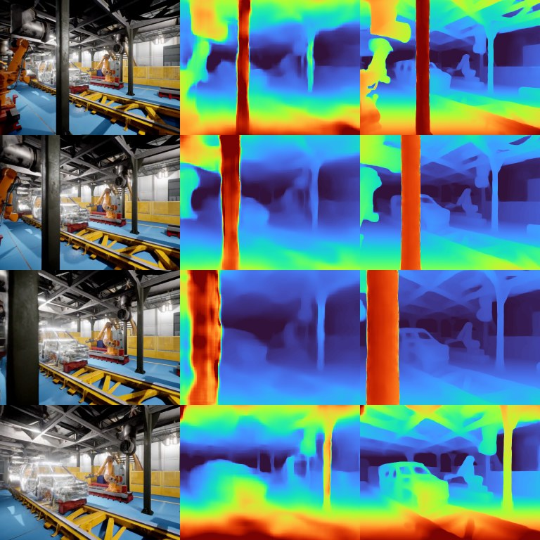
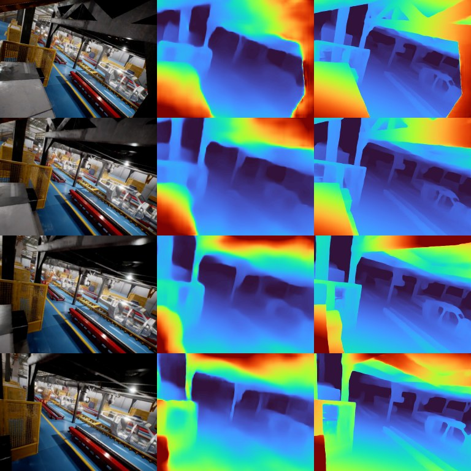
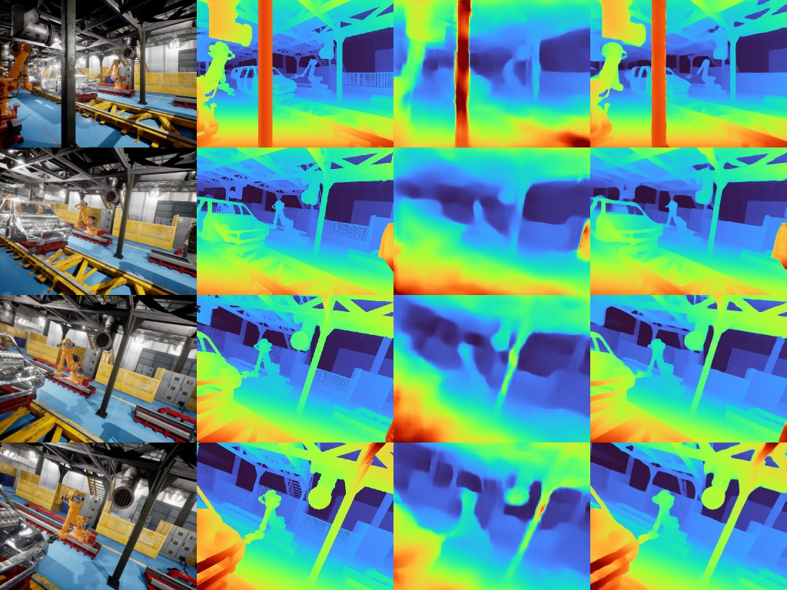
解码器简化：H3 最后一层的归一化特征（过拟合测试）
- 为什么做
- 阶段 1 之后，我们在 256 个窗口上逐步改进了解码器（取哪几层 DiT 特征、VGGT-Ω 教师 token 监督等），结构越来越复杂：6 个中间层的加权组合、4 个独立适配器、自定义的逐通道标准化。这里换一个更简单、也更贴近统一模型的思路：DiT 保持冻结，只读 H3 的最后一层，而且用 H3 自己归一化之后的特征。这正是 H3 的视频输出头和音频输出头读取的表示，所以几何解码器相当于 H3 的“第三个输出头”（深度 + 相机）。
- H3 自带的输出归一化
- 最后一层之后，H3 先做 RMSNorm（带学到的逐通道权重），再按时间步做逐通道缩放和平移，然后才接输出投影（5376 维 → 每个 token 的 96 维 latent）。我们取输出投影之前的 5376 维特征，时间步固定为 t = 0.8，与特征提取时的加噪一致。它已经压住了 H3 残差流里的超大数值通道（见下表），不再需要我们自己统计的标准化参数；这些参数在生成模式下或放开 DiT 之后都可能失效。
- 结构
- H3 第 49 层（冻结）→ H3 输出归一化（冻结）→ 共享展开模块：每个 DiT token（4 帧 × 32×32 像素）展开成 4 帧 × 2×2 个 2048 维 token → 4 个输出头（LayerNorm + 线性层，初始化为恒等）→ VGGT-Ω DPT 深度头的 4 路输入。展开后的特征同时进入相机查询模块（每帧 17 个查询，读本帧和第 0 帧），再进 VGGT-Ω 相机头（原版设置）。可训练参数：展开模块和输出头 0.73 亿，相机查询 1.01 亿，两个预训练头 2.36 亿（小学习率微调）。
- 损失
- 真值损失（VGGT-Ω 的训练损失：相机、带置信度的深度、点云）加 VGGT-Ω 教师 token 损失：4 路输出分别对齐 VGGT-Ω 第 4、11、17、23 层的 token，相机 token 对齐第 23 层的相机 token；教师在某个窗口上自身误差大时降低该窗口的权重。教师只在训练时用，推理时不需要。
- 测试设置
- 16 个训练窗口（从训练评估窗口中均匀抽取，覆盖多个场景），batch 16，即每一步都用到全部 16 个窗口，共 1200 步；学习率等与此前实验相同。每 300 步在这 16 个窗口、32 个 held-out 窗口（训练场景中没训练过的窗口）和 32 个验证窗口（没见过的场景）上评估。目的是测这种解码器能把训练数据拟合到什么程度，以 VGGT-Ω 在同样窗口上的结果为参照。
| 处理方式 | 最大绝对值 | 最大 8 个通道占总能量 |
|---|---|---|
| 原始特征 | 68 万 | 26.3% |
| 普通 LayerNorm | 48.9 | 25.9% |
| H3 自带输出归一化（t = 0.8） | 2.9 | 3.6% |
| 逐通道标准化 + LayerNorm（此前的做法） | 8.6 | 0.2% |
可视化
冻结 DiT 后的解码器探索：从 256 个窗口到全量
- 目标
- 这一阶段 H3 的 DiT 保持冻结（不加 LoRA），只把“解码器”确定下来：读 DiT 的哪些层、这些特征怎样变成 VGGT-Ω 深度头和相机头的输入、用什么监督训练。解码器定下来之后，再放开 DiT 训练。
- 特征提取
- 每个训练窗口是 22 帧、384×512 的视频。先用 H3 的 VAE 编码，再加少量固定噪声（xt = 0.8·x0 + 0.2·噪声，时间步 t = 0.8；每个窗口的噪声固定），配零文本，让 DiT 前向一次，存下所选层的视频 token。每个窗口有 7 个 latent 帧 × 12 × 16 = 1344 个 token，每个 5376 维；一个 token 覆盖 4 帧 × 32×32 像素（第 0 帧和第 17 帧各自单独占一个 latent 帧）。特征只算一次，训练时直接读缓存，H3 不参与训练。早期实验（A1–A6）用的是不加噪声的 t = 1 特征。
- 输出头
- VGGT-Ω 1B-512 的 DPT 深度头和相机头，都用预训练权重初始化，以较小的学习率微调。DPT 头需要 4 路输入（对应 VGGT-Ω 主干第 4、11、17、23 层），每路是每帧 24×32 网格、每格 2048 维的 token；相机头每帧读 17 个 2048 维 token。解码器的任务就是把 DiT token 变成这两种格式。
- 评估
- 256 个窗口的实验每次评估三组窗口：训练窗口（64 个，在训练集里）、held-out（32 个，训练场景里没训练过的窗口）、验证（32 个，训练从未见过的两个场景 carwelding、endofworld）；全量实验只评估训练窗口和验证两组（held-out 窗口本身就在全量训练集里）。深度看逐帧中位数对齐后的 AbsRel，以及只看每个 DiT token 平均深度的“token 级” AbsRel（粗粒度误差）；相机看所有帧对相对位姿的旋转误差、平移方向误差（中位数，度）和 AUC@30。VGGT-Ω 在同样窗口上的结果作为参照：验证集深度 0.028、旋转 0.18°。两个实验之间的差异用逐窗口配对的 bootstrap 置信区间判断。
解码器结构
两种方案的主要区别是读哪些层、怎么归一化、用几个适配器。另外三处不同：多层方案从 A6 起（含 F2）带一个很小的 RGB 卷积分支，单层方案没有；相机查询在多层方案里读 4 路适配器输出，在单层方案里只读共享适配器的输出；F2 重新打开了相机头的 LayerScale（0.1），F1 系列保持原版。输出头和损失函数相同。
- 混合适配器
- 一个 DiT token 对应 4 帧 × 2×2 个 16 像素的 patch，而 DPT 头要求每帧、每个 patch 都有自己的 token。混合适配器有两条路：广播路径把 token 线性映射到 2048 维，加上“第几帧、哪个子位置”的可学习编码，复制到这 16 个位置；逐位置路径让每一帧、每个子位置从 5376 维里读出自己的 256 维（单独占一个 latent 帧的第 0、17 帧用第 5 组），再经一个所有位置共享、零初始化的 256 → 2048 线性层，两路相加后过一个残差 MLP（2048 → 4096 → 2048）。只用广播路径时，同一个 latent 里的 4 帧几乎完全相同（A3 之前的问题）。
- VGGT-Ω 教师监督
- V1 系列开始使用（只在训练时用，推理不需要）：送进 DPT 的 4 路特征（多层方案是 4 个适配器的输出，单层方案是 4 个输出头）分别对齐 VGGT-Ω 第 4、11、17、23 层的 token。距离在 DPT 头自己的归一化和投影之后计算，并按 token 方差归一化，另加 0.25 倍的白化空间误差；相机查询的 17 个输出对齐 VGGT-Ω 最后一层的相机 token（权重 1）和 16 个寄存器 token（权重 0.25）。教师在某个窗口上自身误差较大（深度 > 0.10 或旋转 > 1°）时，该窗口的教师损失降到 0.3 倍。教师权重在训练前半程为 5，之后在 50%–80% 的进度内降到 1.5。V1a、V1c、V1d 用预先缓存的教师结果，每个窗口都有；在线计算教师的实验（F1、F2、F1c、F1d）每步只算 batch 里的 4 个窗口。
- 真值损失与训练
- VGGT-Ω 的训练损失：相机、带置信度的深度（含梯度项）、由预测深度、预测外参和真值内参反投影的点云（整个训练都用真值内参；视场角激活改为直通梯度）。AdamW，适配器和相机查询学习率 5e-4，两个预训练头 1e-4，层混合权重 1e-2；前 100 步线性预热，从头训练时两个预训练头先冻结 300 步、再用 200 步线性放开；之后学习率保持不变，最后 20% 的步数线性衰减（WSD）；权重的指数滑动平均（EMA 0.999）单独评估。
256 个窗口上的逐步改进（A 系列、V1 系列）
- 为什么做
- 阶段 1 的 S1b 在全量数据上只训练到验证集旋转 3.9°，而且训练窗口和验证窗口差不多。在 256 个窗口上一次只改一处，每个实验 2000 步（batch 16，约 1.3–3.2 小时），能在小成本下找出解码器里真正起作用的设计。
- 怎么做
- 每一行在上一行的基础上只改一处（A4 是失败的尝试，后续没有保留；A6 的 RGB 分支几乎没有收益，但之后的实验沿用了它；V1b 在 A9 的基础上改读层）。所有实验的训练集、评估窗口都完全相同。
全量 TartanAir：多层方案（F2）与单层方案（F1）
- 为什么做
- 256 个窗口上的 V1 系列验证集深度约 0.146–0.156，有教师的 V1a、V1c、V1d 旋转约 2.6°。下一步看全量 12,428 个窗口的效果。F1 先跑：单层方案在 16 个窗口的过拟合测试中全面超过了 VGGT-Ω（见上一节），而且结构最简单。F1 在第 2000 步明显落后后，又跑了多层方案 F2 作对照。F2 采用 V1a 的结构（第 12/24/36/49 层、相机头 LayerScale 重新打开、带 RGB 分支），教师改为在线计算；没有用 V1b–V1d 的 6 层混合。
- 怎么做
- 两者都直接读全量特征缓存、在线计算 VGGT-Ω 教师。F2：batch 20，跑到第 2000 步。F1：第 0–2000 步 batch 24；之后改为 batch 28 从第 2000 步的权重继续训练到第 3000 步；再从第 3000 步继续（学习率 5e-4，计划 3000 步、最后 20% 衰减），目标第 6000 步（正在训练）。每次续训都重新预热学习率、重置优化器和 EMA，教师权重的日程也从头开始。每 1000 步（第 3000 步之后每 500 步）评估一次。注意：报告中所有全量结果都是在学习率衰减和教师权重衰减开始之前得到的（学习率 5e-4、教师权重 5）；当前这段的教师权重在第 4500 步、学习率在第 5400 步才开始衰减。256 个窗口的结果则是衰减结束后的第 2000 步。
诊断：F1 为什么学不会
- 现象
- F1 在全量数据上，训练窗口和验证集的误差几乎一样（第 3000 步 0.294 / 0.303），说明不是过拟合，而是连训练数据都学不进去；而同样的结构在 16 个窗口上能把训练误差降到 0.042。为了判断是“训练不够”还是另有原因，我们把 F1 第 3000 步的权重放到 256 个窗口上继续训练（F1c），并做了三项分析（每项分析的关键数字都用另一套独立编写的代码复现过）。
| 输入特征（只在 256 个窗口上拟合线性回归） | 深度 AbsRel（逐帧） | token 级 AbsRel |
|---|---|---|
| 第 49 层（每个通道先标准化） | 0.263 | 0.213 |
| 第 49 层经 H3 输出归一化、不再标准化（正则系数 1e-4 时退化到 0.302 / 0.258） | 0.268 | 0.218 |
| 第 36 层（标准化） | 0.210 | 0.150 |
| 第 12/24/36/49 层拼接（标准化） | 0.213 | 0.154 |
| F1 训练好的解码器（全量第 3000 步） | 0.303 | 0.275 |
| 每个 token 都取真值平均深度（token 粒度的上限） | 0.134 | 0.049 |
| 测量 | 结果 |
|---|---|
| H3 输出归一化对各通道的放大系数 | 中位数 0.00057（约 1/1800），最大的 1% 在 1.5–2.2 之间：大部分通道被压小上千倍 |
| F1 适配器对小尺度通道的依赖 | 把尺度最小的 3376 个通道全部换成均值，适配器第一层的输出只变 0.9%（随机初始化时为 0.4%），即这些通道基本没被用上 |
| 深度信息在哪些通道里（各取 658 个通道做线性读出，验证集 R²） | 尺度最大的 658 个：0.14；随机 658 个：0.30–0.34；尺度最小的 658 个：0.45 |
| 模拟：用同样的特征训练一个小型网络预测 token 级深度（AdamW，3000 步） | 直接读 H3 输出归一化后的特征：训练集 R² 0.999、验证集 0.19；先逐通道标准化：验证集 0.56；不标准化、学习率调大 10 倍：验证集 0.21 |
可视化：验证集上的深度
四个验证窗口（训练从未见过的场景），每张图四行为第 0、7、14、21 帧。列从左到右：输入 RGB、真值深度、F1（全量，最新一次评估）、F1d（256 个窗口，第 4000 步）、F2（全量，第 2000 步）、VGGT-Ω。深度按逆深度着色（暖色近），各列共用取自真值的色标；VGGT-Ω 整段乘一个系数对齐到真值的中位数深度。
消融实验计划
当前的 B1 是基线：干净读出（t = 1）、读第 12/24/36/49 层、真值 + 教师蒸馏、DiT 加 LoRA、有效深度 0.05–200 m。下面每个消融只改一处，其余与 B1 相同，便于把差异归因到这一处改动。B1 跑完前不启动，避免抢占 GPU。
| 编号 | 消融 | 相对 B1 的唯一改动 | 要回答的问题 | 来源 |
|---|---|---|---|---|
| X1 | 只用真值 | 去掉教师蒸馏（特征对齐、相机 token 对齐、伪标签），不加载教师 | 蒸馏是否必要；A1 中蒸馏停掉后拟合变快，蒸馏是否拖慢了真值拟合 | 已确定 |
| X2 | 联合去噪读出（进行中：G1） | 读出时输入加噪的潜变量（随机时间步 t），同时保留 H3 的去噪目标 | 在真正的生成过程中（潜变量带噪）几何分支还能否工作；与干净读出差多少 | 已确定 |
| X3 | 深度范围（max depth） | 真值上限 200 m 改为 100 m（或 80 m），其余不变；评估时另外补一套 VGGT-Ω 协议的指标（0.1–100 m，逐帧中位数尺度 + 平移对齐），并按深度区间、深度边缘分别统计 | 上限对训练是否有影响。预计对 seasonsforest、neighborhood 影响很小（100–200 m 像素只占 0.2–0.5%），对 westerndesert 这类空旷场景较大（7.4%）；同时让我们的数字能与论文对比 | 已确定 |
| X4 | 读出层 | 换读出层组合（例如更浅的 6/12/18/24，或更深的 24/32/40/49） | 几何信息在 DiT 哪些层最多 | 建议 |
| X5 | DiT 冻结 vs LoRA（全量） | 关掉 LoRA，只训练适配器和头部 | 阶段 A 只在 8 段上比过，需要在全量数据上确认 LoRA 的收益是否值得 1.7 倍的时间 | 建议 |
| X7 | 通道拼接 | 深度 / raymap 与 RGB 共用一个 token（通道拼接），不再是独立 token；需配合非零初始化 | 更省算力的排布能否达到同样效果（第一次尝试为零初始化版本，已失败，见 G1 一节） | 已确定 |
| X8 | 双向注意力 | RGB token 也能看到深度 / raymap token | 几何反过来约束 RGB，能否让生成的视频在几何上更一致；代价是 RGB 不再与 H3 逐位一致 | 建议 |
| X9 | 低维相机表示（G1） | 相机不用稠密 raymap，改为每帧一个相机 token（四元数 + 平移 + 视场角），仍用 flow matching 生成 | raymap 冗余度高，模型可以不看 RGB 只靠自身去噪降低损失（G1 第 1000 步的发现）；低维表示能否迫使相机从 RGB 推出 | 建议 |
| X6 | VAE 解码器特征 | 额外读取 H3 VAE 解码器中间层的高分辨率特征送入 DPT 头 | 能否改善边缘偏糊（DiT token 是 32×32 像素 × 4 帧） | 建议 |
B1 结论与下一步
- 结论
-
在完整验证集（769 个窗口，两个没见过的场景）上，B1 的深度逐帧对齐 AbsRel 为 0.104（原始尺度 0.126，常数深度 0.473），相机旋转误差中位数 1.75°，位姿 AUC@30 为 73%。模型确实学会了深度和相机，并且直接输出正确尺度（原始尺度与对齐后只差约 0.02）。
与教师（0.027、0.19°、95%）相比还有明显差距：深度约 4 倍、旋转约 9 倍。差距不只在边缘：深度边缘像素 0.457 对教师 0.328，非边缘像素 0.096 对教师 0.018。carwelding（0.16–0.17）明显比 endofworld（0.07）难。
验证曲线仍在下降但已放缓（第 2742 步 0.120 → 第 5000 步 0.105），而且停止时学习率还在峰值的一半左右，没有退火到底，所以这不是这套设置的上限。
- 待讨论
-
- 是否从第 5000 步检查点继续 B1，把学习率完整退火（原计划还有约 4,100 步），以确定当前设置的上限。
- B2 的设置：是否加大头部学习率、延长蒸馏、或改读出层，来缩小与教师的差距（尤其非边缘区域的 5 倍差距）。
- 消融的先后：X1（只用真值）、X3（深度范围 / 评估协议）改动小，可以先做；X2（联合去噪读出）关系到在生成过程中能否用。
- B1 已按决定在第 5000 步停止；后续训练计划（是否继续 B1、B2 的设置、消融顺序）讨论后再定（之后的工作见 G1、阶段 1 和解码器探索各节）。
- 消融建议优先 X1、X3（改动小，能回答蒸馏和户外段的问题），再 X2。
- RGB 生成目前完全没有运行过。要验证 RGB 不受影响，需要在 RGB 生成时关闭几何分支的 LoRA（尚未实现），并对比生成质量。
- 速度：VAE 编码占 35% 时间，可以预先缓存潜变量（需要改成固定窗口采样）。
指标说明
- AbsRel
- 深度绝对相对误差：每个像素 |预测 − 真值| / 真值 的平均，越小越好；0.1 表示平均差 10%。
- 原始尺度 / 逐帧对齐 / 整段对齐
- 原始尺度不做任何缩放，模型必须直接输出正确尺度；逐帧对齐先把每帧预测按中位数缩放到真值再比，只看形状；整段对齐整段只用一个缩放系数。
- δ1
- 预测和真值之比在 1.25 倍以内的像素比例，越大越好。
- 旋转误差
- 任意两帧之间相对旋转的误差角度，取所有帧对的中位数。
- 平移方向误差
- 任意两帧之间相对平移方向的夹角（不看长度）。
- AUC@30
- 每对帧取旋转误差和平移方向误差中较大的一个，统计在 1°、2°……30° 阈值下的准确率再平均；0–1，越大越好。
- 常数深度基线
- 每帧都预测同一个值（该帧真值的中位数）。模型必须明显好于它才算学到了东西。
- 教师
- 冻结的 VGGT-Ω 1B-512 在同样帧上的结果，作为参照。
- LoRA
- 低秩微调：在冻结的大模型注意力层旁边加少量可训练参数（这里 1.6 亿，约占 DiT 的 0.5%）。